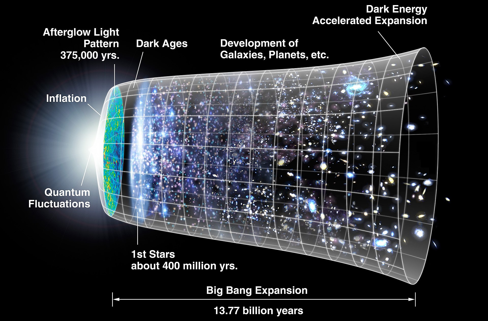

Stockholm University · Department of Astronomy
Lecture 8 (26 Nov 2026)

Image credit: NASA
Distances to a source at redshift $z$ in the Benchmark Model
Each box links to the slides where it was introduced.
Chapter 3 · Lecture 3
Chapters 3–4 · Lecture 3, Lecture 4
Chapter 4 · Lecture 4
Friedmann: $\;\left(\dfrac{\dot a}{a}\right)^2 = \dfrac{8\pi G}{3c^2}\,\varepsilon - \dfrac{\kappa c^2}{R_0^2\,a^2}$
Fluid: $\;\dot\varepsilon + 3\,\dfrac{\dot a}{a}\,(\varepsilon + P) = 0$
Acceleration: $\;\dfrac{\ddot a}{a} = -\dfrac{4\pi G}{3c^2}\,(\varepsilon + 3P)$
Equation of state: $\;P = w\,\varepsilon$ $\;\Rightarrow\;$ $\varepsilon(a) = \varepsilon_0\,a^{-3(1+w)}$
Two of the three equations are independent: the acceleration equation follows from the other two.
| Component | $w$ | $\varepsilon \propto$ |
|---|---|---|
| Matter | $0$ | $a^{-3}$ |
| Radiation | $1/3$ | $a^{-4}$ |
| Cosmological constant | $-1$ | $a^{0}$ |
Chapters 4–5 · Lecture 4, Lecture 6
The critical density makes the universe flat: $\;\varepsilon_c(t) = \dfrac{3c^2H(t)^2}{8\pi G}$, $\;\Omega \equiv \dfrac{\varepsilon}{\varepsilon_c}$
The Friedmann equation with all components:
$$\frac{H^2}{H_0^2} = \htmlClass{c-hot}{\frac{\Omega_{r,0}}{a^4}} + \htmlClass{c-accent}{\frac{\Omega_{m,0}}{a^3}} + \htmlClass{c-good}{\Omega_{\Lambda,0}} + \htmlClass{c-soft}{\frac{1 - \Omega_0}{a^2}}$$Acceleration today: $\;q_0 = \Omega_{r,0} + \tfrac{1}{2}\,\Omega_{m,0} - \Omega_{\Lambda,0}$ (Lecture 7)
Chapter 5 · Lecture 5
| Universe | $a(t)$ | Age $t_0$ |
|---|---|---|
| Empty (Milne), $\kappa = -1$ | $t/t_0$ | $1/H_0$ |
| Matter (Einstein–de Sitter) | $(t/t_0)^{2/3}$ | $\frac{2}{3}\,H_0^{-1}$ |
| Radiation | $(t/t_0)^{1/2}$ | $\frac{1}{2}\,H_0^{-1}$ |
| $\Lambda$ (de Sitter) | $e^{H_0(t - t_0)}$ | $\infty$ |
Flat, one component with $w \ne -1$: $\;a \propto t^{2/(3+3w)}$, $\;t_0 = \dfrac{2}{3(1+w)}\,H_0^{-1}$.
Chapter 5 · Lecture 6
In general, integrate numerically:
$$H_0\,t = \int_0^a \frac{da'}{\left[\Omega_{r,0}\,a'^{-2} + \Omega_{m,0}\,a'^{-1} + \Omega_{\Lambda,0}\,a'^2 + (1 - \Omega_0)\right]^{1/2}}$$Chapter 6 · Lecture 7
Standard candle (known $L$), flux $f$:
$$d_L \equiv \left(\frac{L}{4\pi f}\right)^{1/2} = S_\kappa(r)\,(1+z)$$Flat: $d_L = d_p(t_0)\,(1+z)$
Standard yardstick (known $\ell$), angle $\delta\theta$:
$$d_A \equiv \frac{\ell}{\delta\theta} = \frac{S_\kappa(r)}{1+z}$$Flat: $d_A = d_p(t_0)/(1+z) = d_p(t_e)$
Distance modulus: $\;m - M = 5\log_{10}\left(\dfrac{d_L}{1\ \text{Mpc}}\right) + 25$
Type Ia supernovae at $z \gtrsim 0.3$ are fainter than in an empty universe: the expansion is speeding up.
Think-Pair-Share
Think alone, discuss with your neighbour, then share. Click an option to check.
No: backwards. $d_L = d_p(t_0)(1+z)$ is the largest, $d_A = d_p(t_0)/(1+z)$ the smallest.
Yes. With $1 + z = 3$: $d_A = d_p(t_0)/3$ and $d_L = 3\,d_p(t_0)$, whatever the contents, as long as the universe is flat.
No. Only at $z \ll 1$, where all distances agree (Hubble's law).
The values do, the order does not. $d_p(t_0)$ depends on $\Omega_{m,0}$, $\Omega_{\Lambda,0}$, …, but the factors $(1+z)$ do not.
Think-Pair-Share
Think alone, discuss with your neighbour, then share. Click an option to check.
No. $\ddot a > 0$ means $\dot a$ grows, but $H = \dot a/a$ can still fall: in the Benchmark Model it falls towards $H_0\sqrt{\Omega_{\Lambda,0}}$.
Not needed. That is $\Lambda$ dominating. Acceleration needs less: $q_0 < 0$.
Yes. $q_0 = \Omega_{r,0} + \tfrac{1}{2}\Omega_{m,0} - \Omega_{\Lambda,0} < 0$, from the acceleration equation.
No. Curvature does not enter $q_0$. The supernovae alone allow curved universes; the CMB (Lecture 11) shows ours is close to flat.
Think-Pair-Share
Think alone, discuss with your neighbour, then share. Click an option to check.
No. Special relativity limits motion through space. The recession speed $H_0\,d_p(t_0)$ comes from the expansion of space, and can exceed $c$.
Yes. In the Benchmark Model, every galaxy with $z \gtrsim 1.5$ has $d_p(t_0) > c/H_0$. Their light left when they were closer, and has been reaching us since (see the previous "Try it").
No. In the Einstein–de Sitter universe too: $d_p(t_0) > c/H_0$ for $z > 3$.